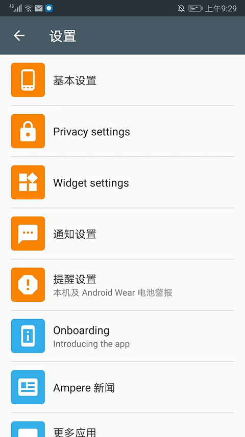
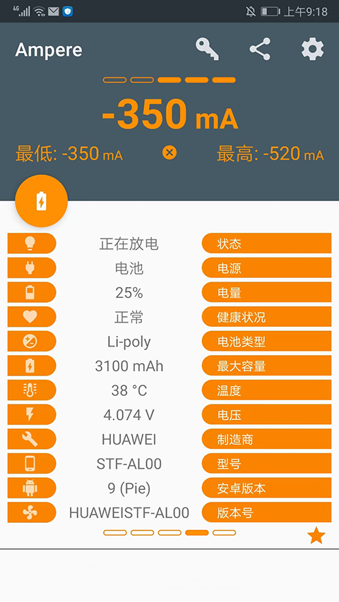

用 Ampere 看懂你的手机充电电流——新手五分钟上手
还在纠结为什么这根线充得比那根慢？Ampere 帮你实时看到手机到底在吃多少毫安电流，本文从零带你跑通第一次测量。
你是不是也有过这种疑惑：手机插上充电器后，到底在以多快的速度充电？是这个原装头快还是那个第三方快充头猛？充电时后台挂着的那些 App 会不会偷偷吃掉一大半功率？这些问题，以前只能靠"感觉"和标称参数瞎猜，现在只要一个 Ampere 就能让你清清楚楚看到答案。
这篇指南写给第一次接触 Ampere 的小白，全程不需要任何 Android 开发或硬件知识，跟着走一遍，五分钟内你就能看到自己手机的实时电流读数。
它到底是干嘛的——一个生活化的类比
把手机电池想象成一个水桶，充电器在往里灌水，App 在往外舀水。水桶里水的总量是电量百分比，灌水速度减去舀水速度就是净增加的速度。
Ampere 做的事，就是在桶上装了一个流量计——它告诉你：现在这一秒钟，充电器往桶里灌了多少毫升（充电电流，正值），或者桶里正在漏掉多少毫升（放电电流，负值）。单位是 mA（毫安），1000 mA = 1 A，这个数越大充电越快，越小放电越省电。

听起来很厉害，但原理其实简单——Android 手机内部都有一个电源管理芯片（PMIC），它内置的电流传感器一直在干活，只是系统默认不把这个数据暴露给普通用户。Ampere 做的就是读这个传感器的数据，然后用友好的界面展示出来。这款工具可以在Ampere官网找到。
五分钟上手——从下载到第一次跑通
第一步：装 App
安装包从官方下载页面拿就行。Ampere 有免费版和付费 Pro 版，免费版已经覆盖了核心的电流读取、历史记录、桌面小组件，日常用完全够。如果你后续想要通知栏常驻、电池警报、自定义主题这些进阶功能，再考虑升级就行——现在我们先用免费版跑通流程。
第二步：打开就等十秒
装完直接点开 App。你会看到主界面中间一个大大的数字，下方有两条曲线。什么都别做，耐心等 10~15 秒。
为什么要等？因为 Ampere 启动后需要先探测你的手机用的是哪种测量接口——不同厂商、不同 Android 版本暴露数据的路径不一样，App 得挨个试一遍才能找到对的那一条。
第三步：如果出了 0 mA 怎么办
如果你等了十秒，数字还是停在 0 mA 或者一直显示"正在检测"，别急，这是最常见的新手障碍。Ampere 给了几个救场选项：
- 打开右上角的设置图标，进入「旧测量方法」把开关打开
- 再往下找到「测量接口」，里面会列出一排候选路径，挨个点一下，每次切换后等 5 秒看数字有没有跳动
- 如果还是不行，重启手机再试一次

大部分主流品牌（小米、OPPO、vivo、一加、荣耀、Pixel，2016 年后发布的机型）走不到第三步就能正常出数。如果全部都试过还是 0，那就不是你操作的问题了——很可能你的手机硬件上没有电流传感器，或者厂商在固件里把数据封死了。这种情况在一些入门低端机上比较常见，属于硬件限制，不是 Ampere 能解决的。
第四步：插上充电器看变化
出数之后，拔掉充电器你会看到数字变成负数（放电），插上充电器变成正数（充电）。试试切换不同的充电头、换不同的数据线，观察数字的跳动——这就是 Ampere 最有价值的用法：直接对比，哪个组合跑得快一目了然。
上手后先玩这三个功能
1. 充/放电历史列表——看看一晚上掉了多少
主界面底部有个历史标签页，每一条记录都有时间戳、电流值和对应的电量变化。点进去还能看到详细曲线。
你会发现一件很有意思的事：熄屏充电和亮屏充电，电流读数差很多。亮屏本身就要耗电，而且屏幕越亮耗电越多，所以充电时尽量锁屏，效率会更高。

2. 桌面小组件——不用开 App 也能扫一眼
长按空白桌面，添加 Ampere 小组件。它会一直显示当前的电流读数和状态图标。充电时看一眼图标颜色就知道有没有在正常充，不用每次都进 App。
3. 放电测试——快速定位"什么东西在吃电"
拔掉充电器，保持屏幕亮着，记下初始的放电 mA 值（比如 -300 mA）。然后打开 WiFi，等 10 秒再看——读数可能会跳到 -400 mA 甚至更高。关掉 WiFi，读数又会回到 -300。
这个小实验能让你直观看到 WiFi、移动数据、GPS 这些模块各自吃掉了多少功耗。以后你做严肃的充电器对比测试时，就知道要先把所有网络模块都关掉，不然测出来的数字里混进了后台同步、推送通知这些额外功耗，对比就不准了。想知道还有哪些因素会影响读数，回头翻Ampere文档有完整的测试条件控制指南。
小白最常问的三个问题
问：为什么同一个充电器，读出来的电流一会儿 1500 mA 一会儿又掉到 800？
别担心，这完全正常。手机内部有一套复杂的充电协议握手逻辑——刚插上时会先"试探"一下充电器能提供多大功率，然后逐步拉上去；电池接近满时又会降速进入涓流充电（细水慢灌，保护电池不被过充）。Ampere 读到的是实时电流，这个值本来就是动态波动的，不是一个固定数字。
问：固件更新后突然变成 0 mA 了，App 坏了吗？
App 没坏，是手机变了。Android 系统更新可能会换掉电源管理芯片的驱动、收紧传感器数据的访问权限，导致 Ampere 原来用的那条测量路径在新系统里失效了。
解决方法很简单：打开 Android 设置 → 应用管理 → 找到 Ampere → 存储 → 点清除数据（注意不是"清除缓存"，清缓存不够）→ 再点强制停止 → 重新打开 App。Ampere 会回到出厂默认配置，重新探测新系统的可用接口，十有八九就能恢复。
问：免费版和 Pro 版差别大吗？
日常看电流、做对比测试、用桌面小组件——免费版完全够用。Pro 版主要解锁三个东西：通知栏常驻显示（把 mA 读数塞进下拉通知栏，比小组件更不占桌面）、电池警报（温度过高或电压异常时自动推通知）、自定义主题。如果你只是想"看懂充电电流"，免费版就够了；如果你想让电流数据变成日常监控的一部分，Pro 值得考虑。
写在最后
Ampere 是那种装上就停不下来的小工具——一旦你看到了真实的电流数字，就再也回不去靠标称参数"盲猜"的状态了。原来我那根 C to Lightning 线居然只有 600 mA，原来快充头插上后要等 20 秒才真正拉到峰值……这些以前不知道的细节，现在一眼就能看清。
进阶方向的话，建议你试试充电对比测试的完整流程：关掉所有网络和后台、锁屏、固定电量区间（比如从 20% 充到 60%），换不同的充电器和数据线跑一遍，你会得到一份非常客观的真实性能排名。